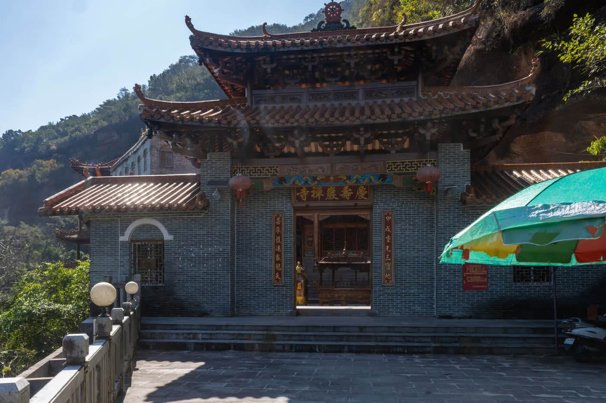
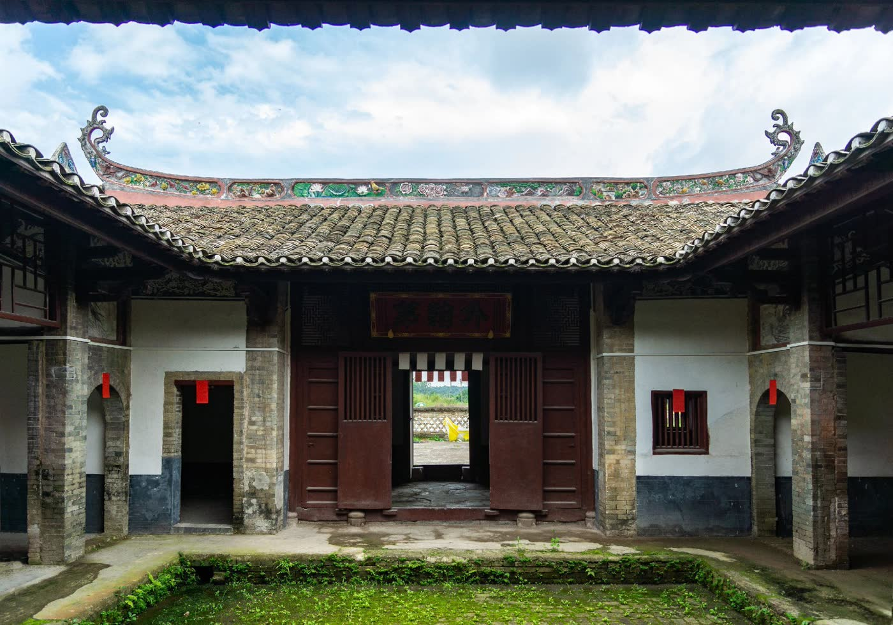
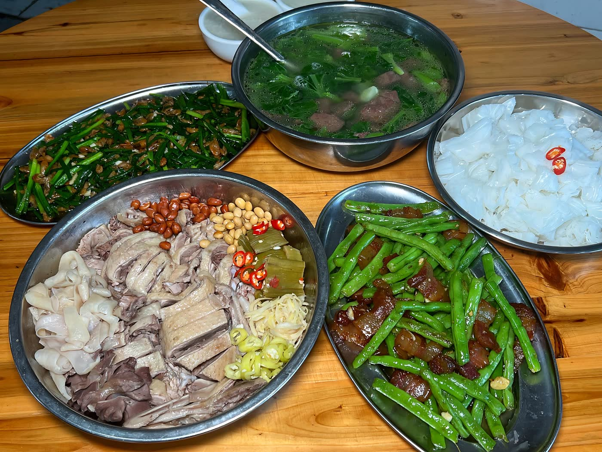
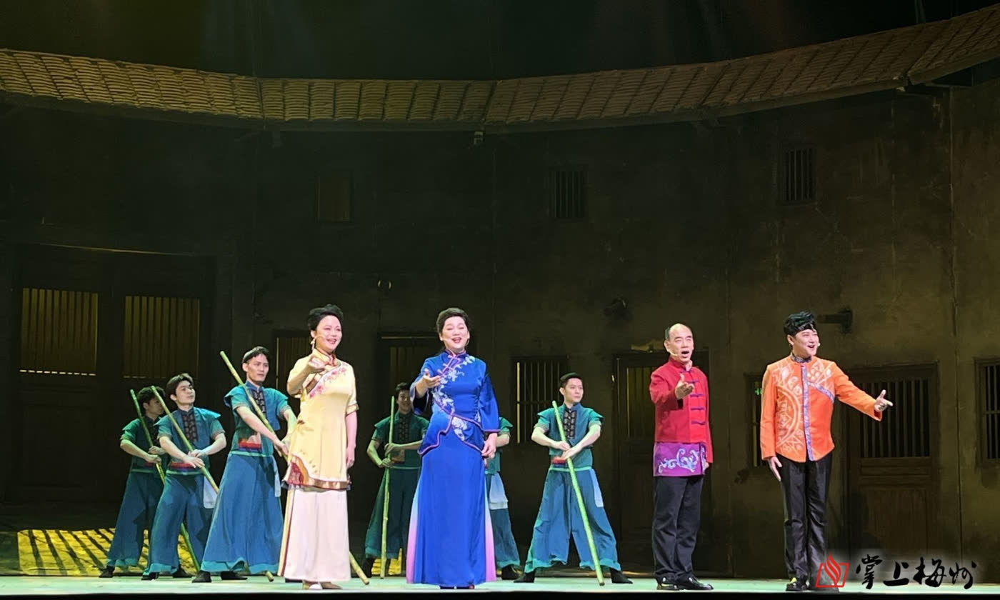

Welcome · 前言
一半是山水，一半是烟火
玉林地处广西东南部，古称郁林，自西汉元鼎六年（公元前 111 年）置郁林郡，至今已有两千一百余年州郡史。 大容山的林海、都峤山的丹霞、真武阁的奇构、街头的一碗牛腩粉—— 这片土地把风景与日子揉在一起，慢慢长出属于自己的味道。
这座站点按主题分了五个章节：山水自然、 人文古迹、 特色美食、 民俗非遗、 关于玉林， 每个章节图文与影像分开放置，翻页更轻、加载更快。
2100+ 年州郡建置历史西汉元鼎六年置郁林郡
580.42万人常住人口2024 年末数据
44家国家 A 级旅游景区其中 4A 级景区 16 家
220万+海外华侨及港澳台同胞广西第一侨乡
Chapters · 章节导览
翻开玉林的四种模样
山水、古迹、味道、乡音。点开任意一张，进入对应章节。
NATURE

山水自然
NATURE · DARONGSHAN · DUQIAOSHAN大容山的草甸风车、都峤山的丹霞赤壁、五彩田园的稻浪水街，一步一景。
进入章节
HERITAGE

人文古迹
HERITAGE · PAVILION · ANCIENT CITY不用一根铁钉的真武阁、唐风夜色的容州古城、聚族而居的客家围屋。
进入章节
CUISINE

特色美食
CUISINE · BEEF DRY · DUCK清晨一碗牛腩粉，年节一碟牛巴、一只白切鸭，味道都在市井摊头。
进入章节
FOLK ART

民俗非遗
FOLK · BAYIN · OPERA · PUPPET唢呐一响八音穿云，茶山起调采茶入戏，十指提线便是一台木偶戏。
进入章节
About · 关于
岭南美玉，我的家乡
想了解这座城的沿革、人口与侨乡数据，以及全部素材来源，请移步「关于玉林」。